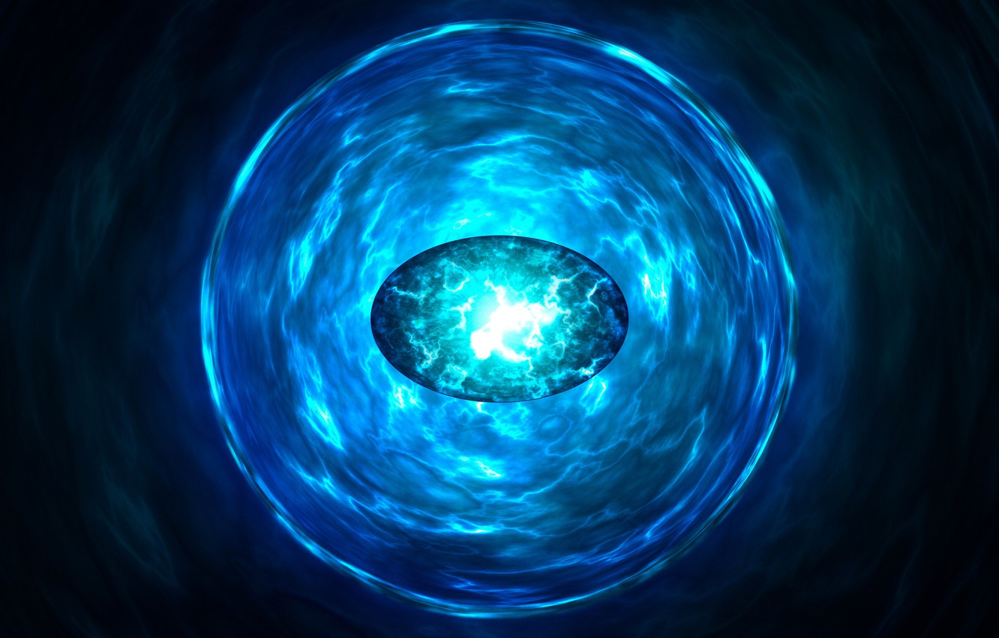
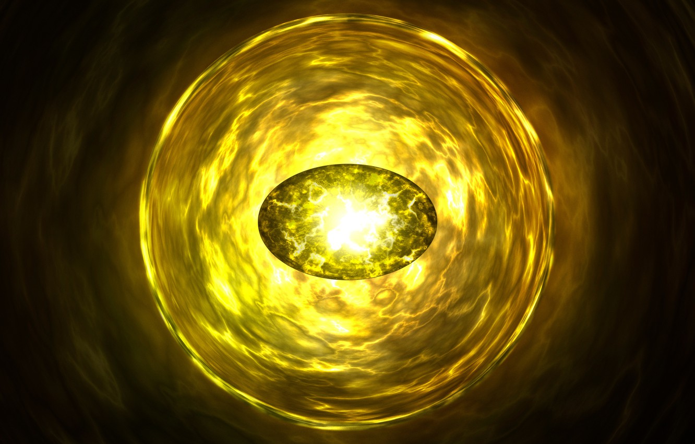
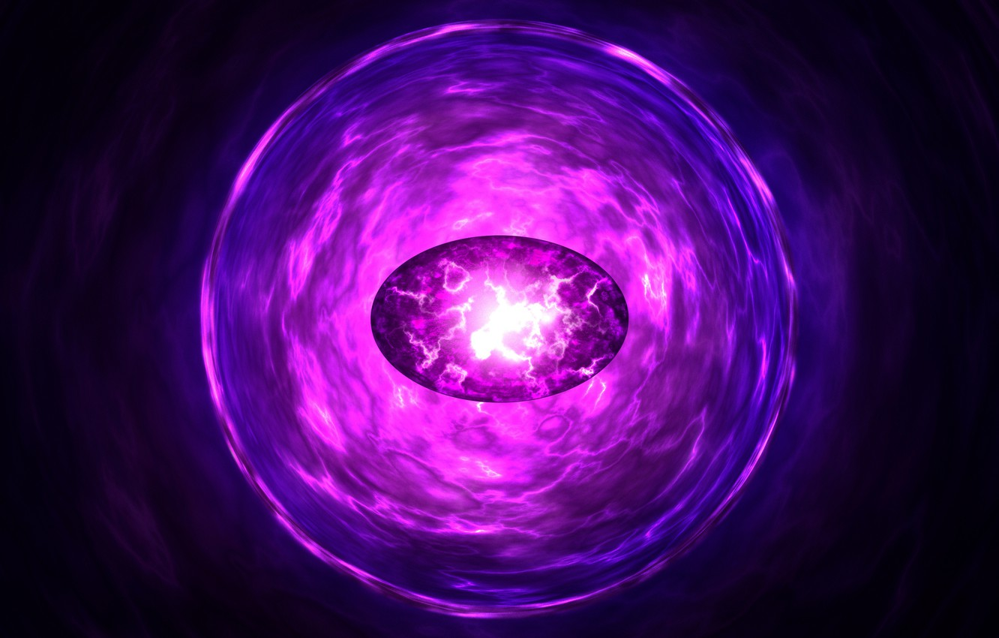
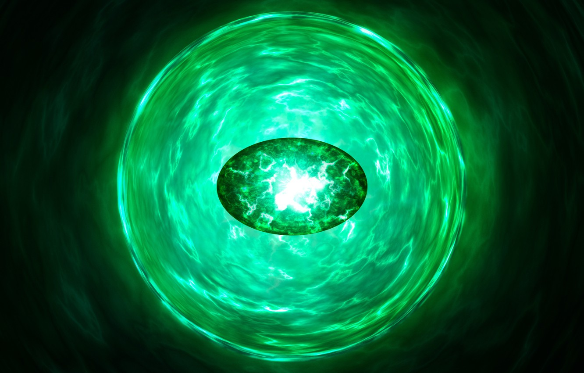
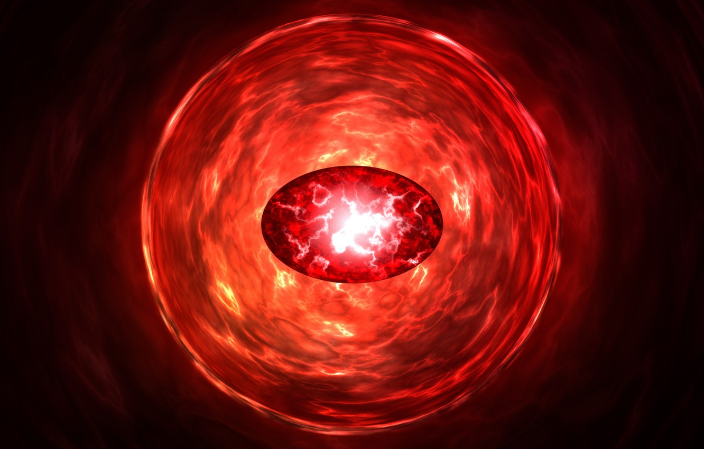
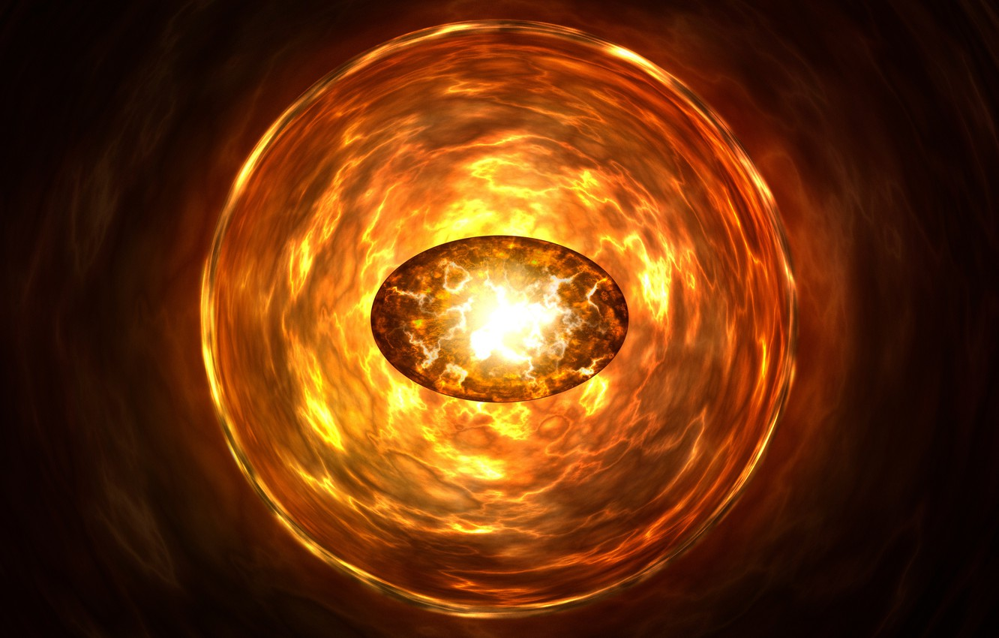

| Название | Описание | Цвет | Илюстрация |
|---|---|---|---|
| Камень пространства | Синий | Камень пространства позволяет своему владельцу манипулировать пространством по желанию. Основной возможностью Камня является перемещение владельца в любое желаемое место независимо от расстояния. Также может увеличить скорость пользователя. Кроме того, камень позволяет появляться сразу в нескольких местах и изменять расстояние между объектами, противореча законам физики. В сочетании с другими Камнями бесконечности позволяет владельцу находиться во всех местах вселенной. |  |
| Камень разума | Желтый | Камень разума дает своему владельцу псионические силы, например, телепатию и телекинез. Обладатель камня получает доступ к мыслям и мечтам других существ. Камень разума может приумножать умственный способности пользователя. В сочетании с другими камнями камень разума позволяет своему носителю соединяться со всеми сознаниями во вселенной одновременно. Помимо этого, камень разума — это воплощение подсознания вселенной. |  |
| Камень силы | Фиолетовый | Камень силы дает своему владельцу всю силу и энергию, которые когда-либо существовали, существуют или будут существовать во вселенной. Камень силы оказывает воздействие и на другие камни бесконечности, например, он может усиливать их эффекты. Этот камень бесконечности делает своего владельца сильнее и дает ему неограниченную выносливость. Помимо этого, с помощью камня силы его носитель может скопировать любую сверхчеловеческую способность. Камень силы может питать и неодушевленные объекты. |  |
| Камень времени | Зеленый | Камень времени дает своему владельцу полный контроль над прошлым, настоящим и будущим. Носитель камня может предвидеть будущие события, путешествовать в прошлое, влиять на возраст живых существ. Камень времени может быть использован в качестве оружия — врагов можно помещать в бесконечные петли времени. На пике своих способностей и при использовании с другими камнями бесконечности камень времени позволяет своему владельцу существовать во всех промежутках времени одновременно. |  |
| Камень реальности | Красный | Этот камень бесконечности способен изменять реальность и ломать законы природы и логики. Камень может воскрешать из мертвых, искажать реальность до неузнаваемости и делать вещи, которые сделать невозможно. Наиболее могущественные обладатели камня могут создавать по своему желанию целые альтернативные реальности. |  |
| Камень души | Оранжевый | Камень души известен тем, что является самым мощным из всех камней бесконечности. Это связано с тем, что камень души предоставляет владение властью над жизнью и смертью, давая обладателю божественное право решать, кто живёт, а кто умрёт. Его также можно использовать, чтобы увидеть душу человека, именно эту функцию использовал Танос, чтобы поймать настоящего Доктора Стрэнджа после того, как он создал множество своих же клонов. |  |